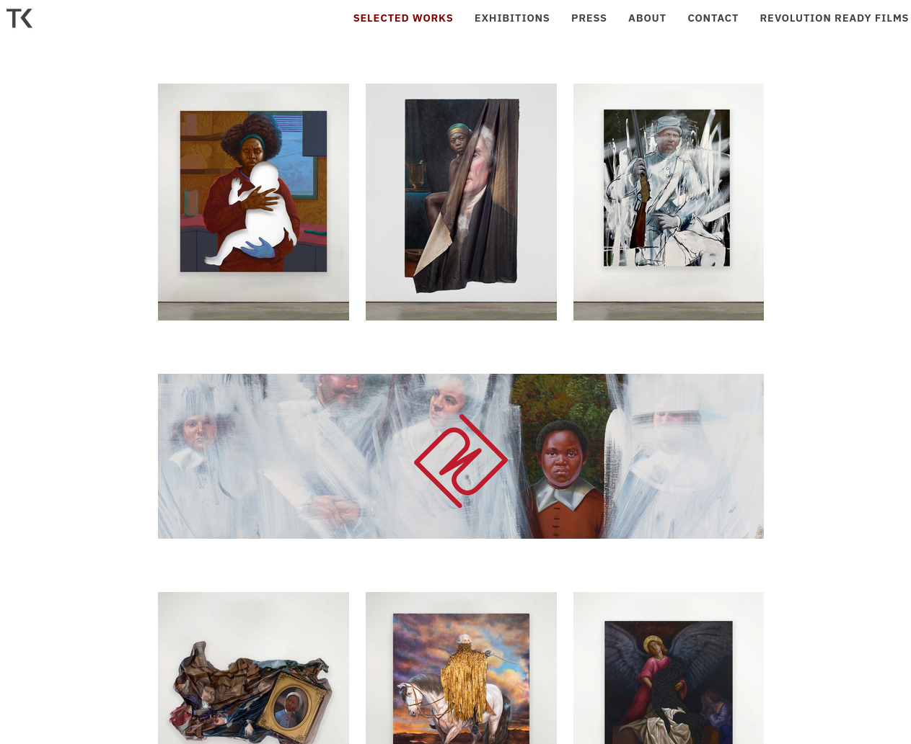
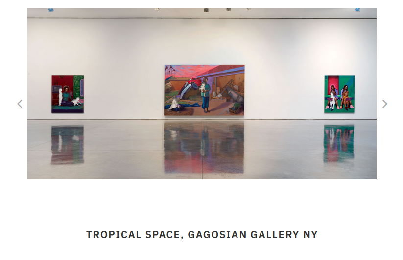
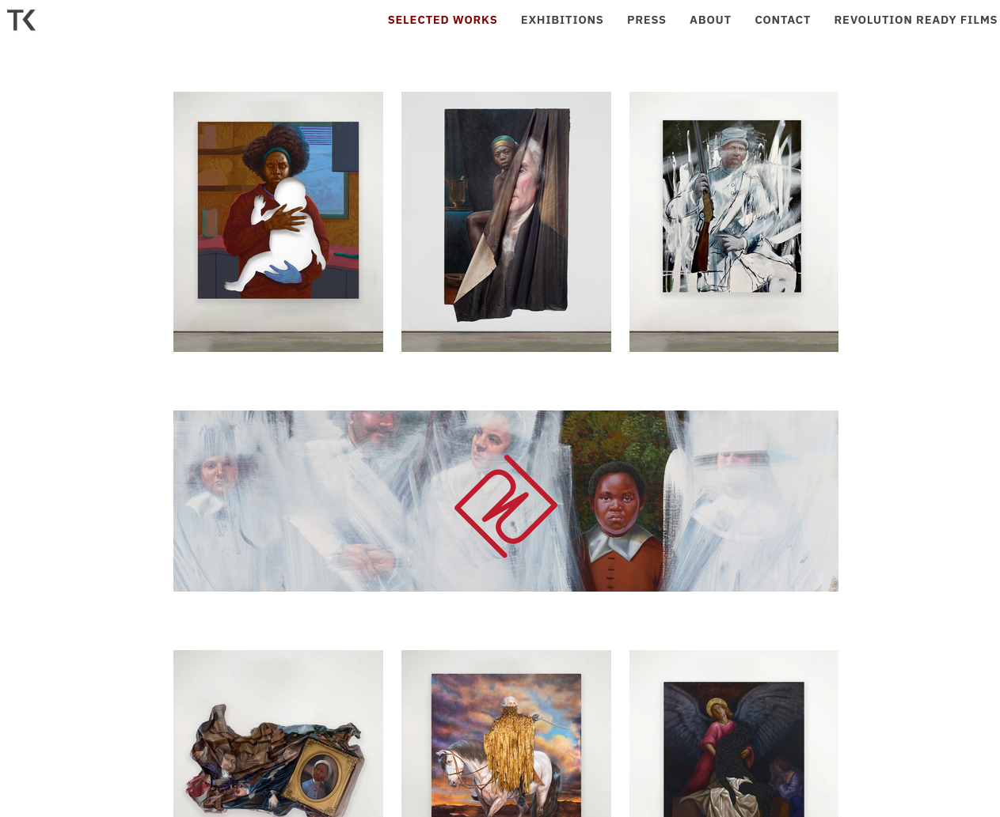
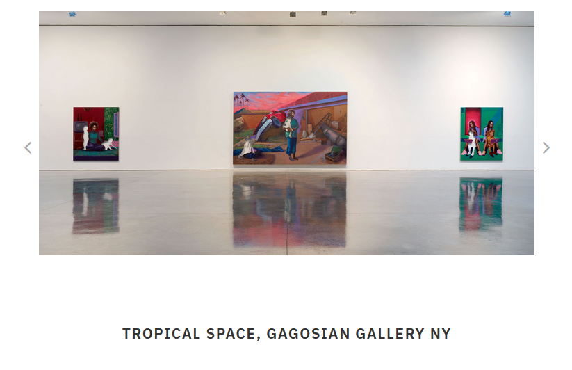

Caden Lee's Digital Archive
W O R L D B U I L D I N G - 2 0 2 5
# Presenting and Representing Art (2025/01/17)
After exploring the works of Sanford Biggers, Titus Kaphar, and Carrie Mae Weems through multiple lectures and seminars, I'm now somewhat familiar with their work--but I haven't ever seen their art, which is often very physical, in person. Instead, I've seen photos and videos. No matter how high-resolution, they are still just representations.
I realize that the way art is presented to us strongly affects the way we see it. Considering how wide an audience the Internet can be, I decided to investigate specifically how Titus Kaphar presents his art online, as opposed to in a museum.
# Websites vs. Museums
In a physical museum, visitors are guided by the physical shape of the rooms and doorways, navigating through one continuous space. If they go to every room in an installation, they likely see every work of art, and choose which ones to spend more time studying.
 Above (image 1): one of Kaphar's recent installations, Exhibiting Forgiveness (2023)
Above (image 1): one of Kaphar's recent installations, Exhibiting Forgiveness (2023)
By moving through the room, viewers also inherently look from different angles and distances, allowing them to naturally focus on different details over time.
 Above (image 3): Titus Kaphar's work Enough About You (2016) includes a crumpled, distorted section and gold frame whose texture and detail could be more deeply analyzed in person from various angles
Above (image 3): Titus Kaphar's work Enough About You (2016) includes a crumpled, distorted section and gold frame whose texture and detail could be more deeply analyzed in person from various angles
Museums and collections can also have physical significance with respect to the art inside--placing a work in a modern art museum, for instance, already categorizes it as contemporary art. In the case of Kaphar's Enough About You, which transforms a painting of the wealthy founders of Yale University to focus on the unnamed enslaved child, it was recently displayed in the Yale Center for British Art, replacing the original painting and highlighting the university's slavery-entwined past. Part of its significance in that context came from its physical location at Yale, showing one way that the university is attempting to reckon with its history.
Above (image 1): one of Kaphar's recent installations, Exhibiting Forgiveness (2023)
By moving through the room, viewers also inherently look from different angles and distances, allowing them to naturally focus on different details over time.
Above (image 3): Titus Kaphar's work Enough About You (2016) includes a crumpled, distorted section and gold frame whose texture and detail could be more deeply analyzed in person from various angles
Museums and collections can also have physical significance with respect to the art inside--placing a work in a modern art museum, for instance, already categorizes it as contemporary art. In the case of Kaphar's Enough About You, which transforms a painting of the wealthy founders of Yale University to focus on the unnamed enslaved child, it was recently displayed in the Yale Center for British Art, replacing the original painting and highlighting the university's slavery-entwined past. Part of its significance in that context came from its physical location at Yale, showing one way that the university is attempting to reckon with its history.
In a website, visitors rely on interactive design cues to navigate, such as a menu bar, images that can be hovered, spacing, and colors. Each image or link acts as a portal to a more detailed page, allowing the user to choose which topics they want to see more of, while hiding the rest.
 Above (image 2): a screenshot of the Selected Works page of Kaphar's website, https://www.kapharstudio.com/work/. When the user hovers an image, it displays the medium (such as "Cutouts"). Clicking on an image takes the user to a page with other works in the same medium
In a browser, it is possible to zoom in or open images in new tabs, but this is a conscious and specific action. Normally it is up to the website designers to choose which details to highlight by default. In Kaphar's website, clicking on an image makes it take up the full screen, allowing further inspection. However, this feature still requires conscious effort, as opposed to the natural progression of a museum visit.
 Above (image 4): a screenshot of Kaphar's page about one of his exhibitions. The rest of the page is blank, allowing the user to focus on the art
By arranging these images with a plain white background, Kaphar's website emulates the simple organization often found in museums. This corresponds to his use of traditional museum-hosted mediums like oil painting as a starting point for many works, inducing the viewer into a sense of familiarity. The web page alone already conveys this surface-level component of his art, which is then subverted by his distortions, additions, and other distinct features.
 Above (image 2): a screenshot of the Selected Works page of Kaphar's website, https://www.kapharstudio.com/work/. When the user hovers an image, it displays the medium (such as "Cutouts"). Clicking on an image takes the user to a page with other works in the same medium
In a browser, it is possible to zoom in or open images in new tabs, but this is a conscious and specific action. Normally it is up to the website designers to choose which details to highlight by default. In Kaphar's website, clicking on an image makes it take up the full screen, allowing further inspection. However, this feature still requires conscious effort, as opposed to the natural progression of a museum visit.
 Above (image 4): a screenshot of Kaphar's page about one of his exhibitions. The rest of the page is blank, allowing the user to focus on the art
By arranging these images with a plain white background, Kaphar's website emulates the simple organization often found in museums. This corresponds to his use of traditional museum-hosted mediums like oil painting as a starting point for many works, inducing the viewer into a sense of familiarity. The web page alone already conveys this surface-level component of his art, which is then subverted by his distortions, additions, and other distinct features.
These differences suggest Kaphar's potential motivations with his website: through its design, the site serves as a preview, a sampling, of his works and their typical museum environment, inviting viewers to see them in person and fully appreciate them in the contexts that give them the most meaning.
# Provided vs. Discovered
While the difference between Kaphar's website and a museum implies that websites serve a more limited and inauthentic experience, they do give users one important ability: the ability to choose and discover art on their own.
In a museum exhibit or even in a professor's lecture, topics and artworks are handpicked by a third party. Only the set of items deemed most relevant, useful, or interesting are placed on the walls or the slides, and the rest are hidden away or inaccessible. On the web, though, a user can freely and quickly jump from subject to subject with hyperlinks and search boxes. For instance, the Wikipedia article for Titus Kaphar links to the article for the touring art exhibition Afro-Atlantic Histories, which links to artist Theaster Gates, which links to his organization the Rebuild Foundation, and so on.
New topics discovered in this way can feel more personal and influential due to the journey taken to reach them, and this supports the same idea seen in Kaphar's website layout: that the Internet is an art discovery platform.
In a museum exhibit or even in a professor's lecture, topics and artworks are handpicked by a third party. Only the set of items deemed most relevant, useful, or interesting are placed on the walls or the slides, and the rest are hidden away or inaccessible. On the web, though, a user can freely and quickly jump from subject to subject with hyperlinks and search boxes. For instance, the Wikipedia article for Titus Kaphar links to the article for the touring art exhibition Afro-Atlantic Histories, which links to artist Theaster Gates, which links to his organization the Rebuild Foundation, and so on.
New topics discovered in this way can feel more personal and influential due to the journey taken to reach them, and this supports the same idea seen in Kaphar's website layout: that the Internet is an art discovery platform.

Above (image 5): the mouse pointer is a powerful tool
# Innovation: Art Native to the Web
The modern ability to discover and choose interests using the Internet can also have downsides, though, like addiction due to manipulative recommendation algorithms. One way some artists have chosen to respond is by taking advantage of technology to spread awareness of such problems--another way that art and the Internet can intersect.
For instance, net artist Ben Grosser created a project called Stuck in the Scroll that displays in real time his addiction to social media app TikTok's endless scroll feature.

Think of this work as a last-ditch effort, a sort of public confessional as therapeutic tool aimed at defusing the intense compulsion I feel every day to endlessly scroll the world’s most popular video app (Grosser)
Left (image 6): a demo of Grosser's 2024 project, which shows whether he is on TikTok, when he was last on the app, and how long he has been scrolling in total--a shocking number, but one that makes sense considering how lost hours add up over time
Projects like this one are accessible due to the very same thing that they criticize and examine: the instantaneous nature of today's world. Much like how Titus Kaphar transforms historical paintings as a way of giving viewers new points of view, net artists repurpose technologies typically used for work, entertainment, or profit to reveal how those technologies are drastically influencing everyday life. As new issues keep emerging in this changing world, so will new art, new mediums, and new perspectives.
Image credits (in order, starting with image 1):
1. An image of Titus Kaphar's recent Beverly Hills installation, Exhibiting Forgiveness (2023), from the Gagosian gallery's website
2. A screenshot of the Selected Works page of Titus Kaphar's website, https://www.kapharstudio.com/work/, as of January 10, 2025
3. Kaphar, Titus. Enough About You. 2016, loaned to the Yale Center for British Art by the Collection of Arthur Lewis and Hau Nguyen, New Haven, Connecticut
4. A screenshot of the page about Titus Kaphar's From A Tropical Space exhibition on his website, https://www.kapharstudio.com/tropical-space-gagosian-ny/, as of January 12, 2025
5. A representation of a vector hand cursor or pointer by Wikimedia user Lordalpha1 in 2023
6. A demo GIF from Ben Grosser's net art project Stuck in the Scroll from 2024
1. An image of Titus Kaphar's recent Beverly Hills installation, Exhibiting Forgiveness (2023), from the Gagosian gallery's website
2. A screenshot of the Selected Works page of Titus Kaphar's website, https://www.kapharstudio.com/work/, as of January 10, 2025
3. Kaphar, Titus. Enough About You. 2016, loaned to the Yale Center for British Art by the Collection of Arthur Lewis and Hau Nguyen, New Haven, Connecticut
4. A screenshot of the page about Titus Kaphar's From A Tropical Space exhibition on his website, https://www.kapharstudio.com/tropical-space-gagosian-ny/, as of January 12, 2025
5. A representation of a vector hand cursor or pointer by Wikimedia user Lordalpha1 in 2023
6. A demo GIF from Ben Grosser's net art project Stuck in the Scroll from 2024
All code (software and associated documentation files) is © 2025 Caden Lee under the MIT license (source).
Analysis on this digital archive is written by Caden Lee, unless stated otherwise.
All referenced works (images, websites, quotes, etc.) not by me belong to their respective creators and are used here for commentary and educational purposes.
Last updated: 2025/01/16
All referenced works (images, websites, quotes, etc.) not by me belong to their respective creators and are used here for commentary and educational purposes.
Last updated: 2025/01/16